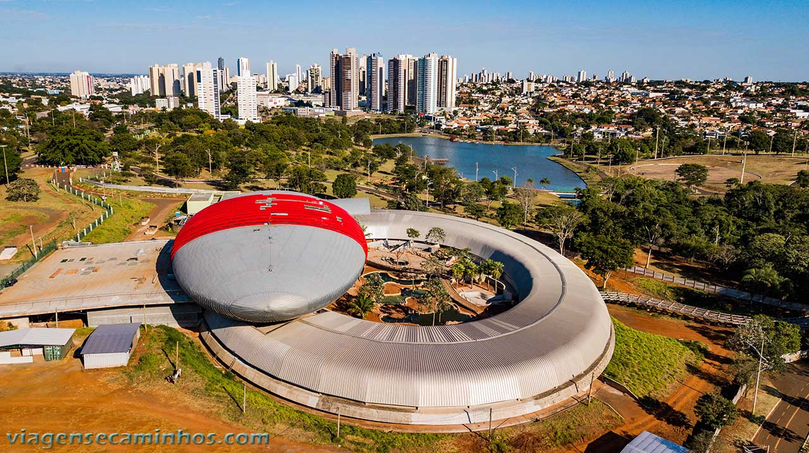

Mato Grosso do Sul é um estado localizado na região Centro-Oeste do Brasil, conhecido por suas belezas naturais e por ser uma porta de entrada para o Pantanal, uma das maiores áreas alagadas do mundo e um verdadeiro santuário de biodiversidade. Sua capital, Campo Grande, é uma cidade moderna e acolhedora, com uma forte influência cultural e uma economia baseada na agroindústria, pecuária e turismo. O estado também oferece paisagens incríveis, como rios, matas e áreas de preservação, tornando-se um destino especial para quem gosta de natureza e aventura. Mato Grosso do Sul é um lugar que combina desenvolvimento com a preservação do meio ambiente de forma admirável!
